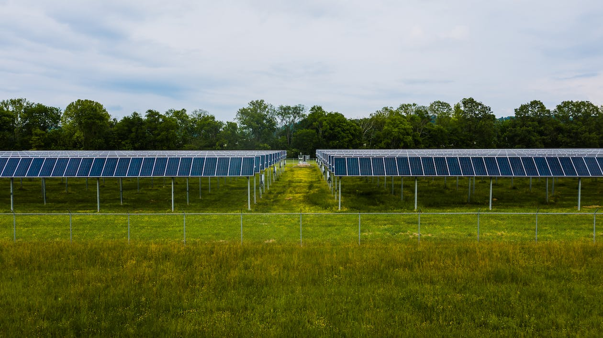
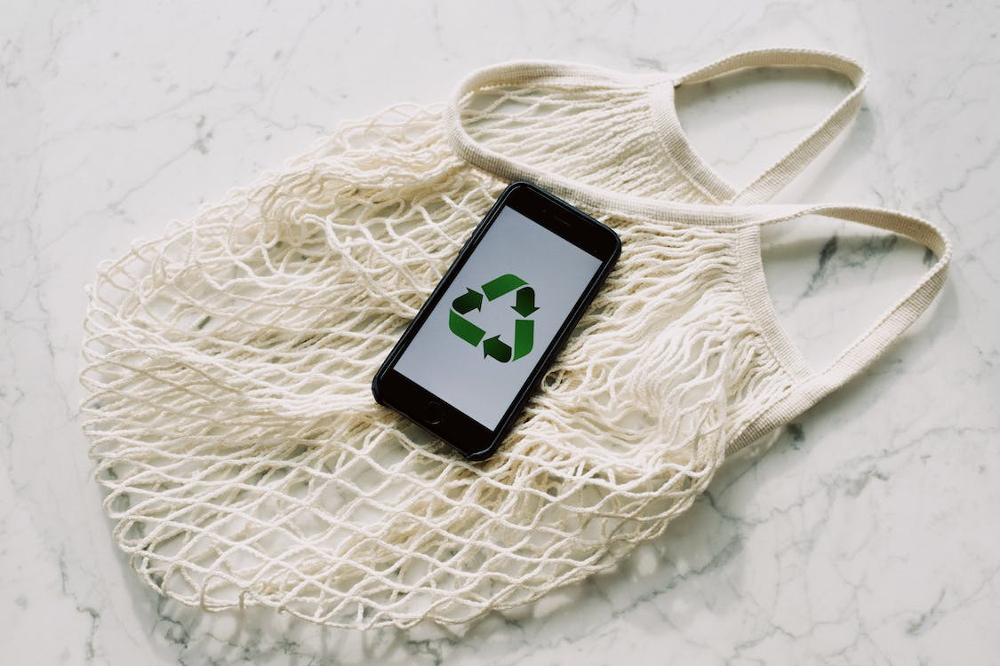
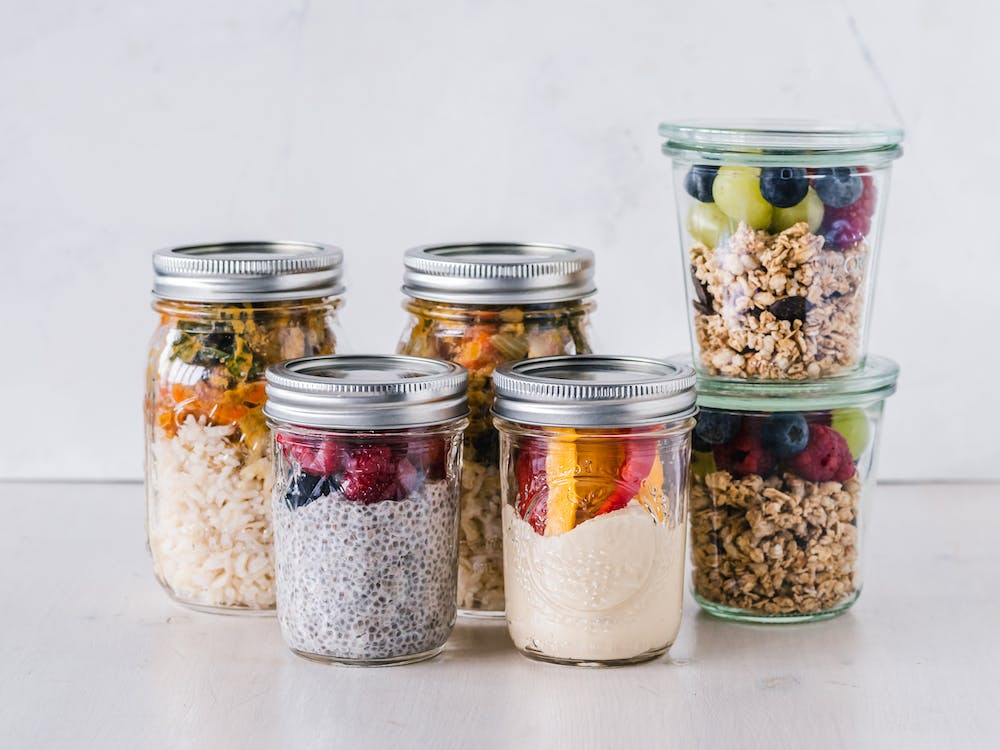
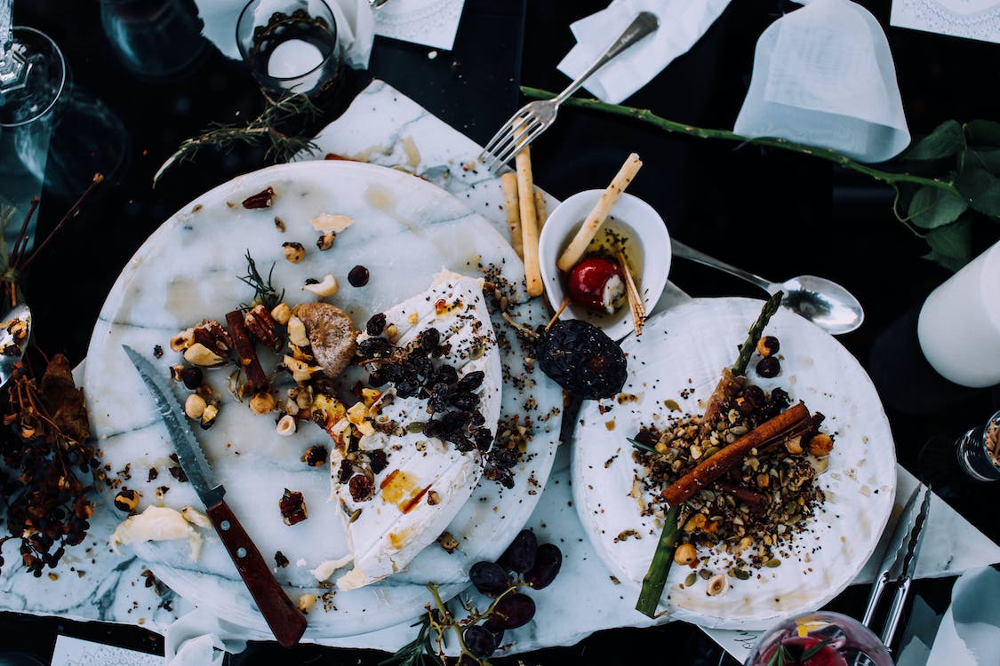

How can we Help?

Save Energy!
Coal, oil, and gas are major sources of our country's electricity and heat. Reduce your heating and cooling, use energy-efficient electric appliances like LED lights and dishwashers, wash your clothes in cold water, and hang up your clothes to dry rather than using a dryer.

Reduce, Reuse, and Recycle!
Every stage of production, from the extraction of raw materials through the fabrication and delivery of commodities to market, contributes to carbon emissions in the production of electronics, clothing, and other goods we purchase. Buy fewer goods, shop secondhand, fix what you can, and recycle as much as you can to conserve the environment.

Eat more Vegetable and Fruits!
Eating more fruits and vegetables, whole grains, legumes, nuts, and seeds while consuming less meat and dairy can have a large positive influence on the environment. In general, producing plant-based foods uses less energy, water, and land and produces less greenhouse gas emissions.

Reduce Food Waste!
When food is wasted, the energy and resources necessary to cultivate, produce, package, and transport it are also wasted. Additionally, methane, a potent greenhouse gas, is produced when food spoils in a landfill. Use the items you purchase, then compost the remainder.

Walk, Bike, or Use Non-Gas Vehicles (Electric)!
The majority of the cars and trucks on the road today burn either diesel or gasoline. Driving less and using a bike or walking will both benefit the environment and improve your fitness and health. Consider using a bus or train for lengthier trips.